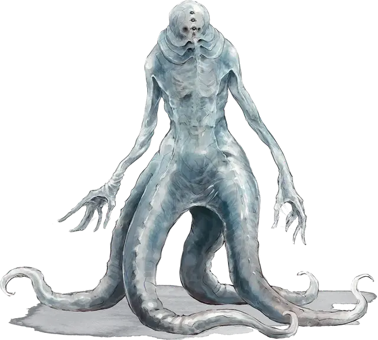

Порождение аболета
Aboleth Spawn
Средняя Аберрация, законно-злая

Класс Доспеха 14 (природный доспех)
Хиты 93 (11к8 + 44)
Скорость 30 футов, плавая 30 футов
| мод | спас | ||
|---|---|---|---|
| СИЛ | 19 | +4 | +4 |
| ЛОВ | 11 | +0 | +0 |
| ТЕЛ | 18 | +4 | +4 |
| мод | спас | ||
|---|---|---|---|
| ИНТ | 7 | −2 | −2 |
| МДР | 12 | +1 | +1 |
| ХАР | 9 | −1 | −1 |
Навыки Восприятие +4
Сопротивление урону психическая энергия
Иммунитет к состояниям испуг, очарование
Чувства тёмное зрение 120 футов, пассивное Восприятие 14
Языки Общий, Глубинная речь, Телепатия 60 фт.
Опасность 5 (1800 опыта)
Бонус мастерства +3
Особенности
Амфибия. Порождение аболета может дышать и воздухом и под водой.
Сосуд аболета. Порождение аболета обязано подчиняться своему хозяину аболету [aboleth].
Зависимость от воды. Порождение аболета получает 6 (1к12) урона кислотой за каждые 10 минут, которые он проводит без воздействия воды.
Действия
Мультиатака. Порождение аболета совершает одну атаку Копьём, две атаки Щупальцем и одну атаку Психической плетью.
Копье. Рукопашная или Дальнобойная атака оружием: +7 к попаданию, досягаемость 5 футов или дистанция 20/60 футов, одна цель. Попадание: 7 (1к6 + 4) колющего урона или 8 (1к8 + 4) колющего урона при использовании двумя руками для рукопашной атаки.
Щупальце. . Рукопашная атака оружием: +7 к попаданию, досягаемость 10 футов, одно существо. Попадание: Цель схвачена (Сл высвобождения 14) и получает 9 (2к8) урона психической энергией в начале каждого своего хода, пока захват не закончится. У порождения есть четыре щупальца, каждое из которых может схватить одно существо.
Психическая плеть. Рукопашная атака оружием: +7 к попаданию, дистанция 120 футов, одна цель. Попадание: 18 (4к8) урона психической энергией.